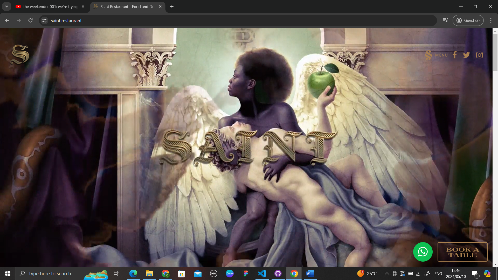

BBD Software is a software company that works with software for corporate companies. From the homepage, the website communicates its product and provides visual cues to the user on how to use the website.
The homepage provides the user with the information they may need to look at while also avoiding cluttering all the information in one place or a set space. It is easy to see what needs to be communicated and the information does not overwhelm the user.
The clarity and simplicity of the website allows for a good user experience because the website behaves as expected without any hiccups when interacting with it. The great thing about this website is at the bottom in the footer the website has an accessibility section which addresses how users can make the website more accessible to them.
Saint is a luxury restaurant located in Sandton. The website is extremely aesthetically pleasing as it shows the user beautiful images and animation from the loading page.
The homepage has a great balance between text and images and does not overwhelm the user with too much text. The hyperlinks are a bit difficult to see due to the colours being a bit too light on the eyes and the text colour not meshing well with the general colour of the background
They website feels smooth when using in terms of it interaction design when clicking, scrolling, and zooming in and out of pages. This creates a great user experience as it is easy to use, everything is clear and it does not feel dreaful to interact with.
This is a South African news website that allows users to access the latest news articles. The website’s homepage displays a lot of information and does present itself with a few ads either on the sides or in between articles. This information does begin to feel overwhelming the longer you stay on the page because users wouldn’t necessarily kno where to start. At the top there is a navigation bar that displays different categories which users can browse through.